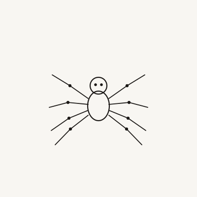

Interactive Web · 2025
Eight: Procedural Spider
with Inverse Kinematics
A real-time procedural spider rendered in the browser. Eight legs calculate their own footfall positions using a two-bone IK solver, producing a biologically plausible gait — autonomous, responsive, and entirely computed frame by frame without pre-authored animation.
The Approach
Each leg is modelled as a two-segment chain with a fixed root at the spider's body and a free endpoint (the foot). A FABRIK-style IK loop resolves the joint angle every frame, placing the foot on a procedurally defined terrain surface. The gait emerges from a phase offset between legs — no keyframes, no motion capture.
The spider's body position is driven by D3's force simulation, which grounds the system in a physics-aware coordinate space and makes the creature respond naturally to mouse interaction — following, recoiling, and wandering when left alone.
Technical Detail
The IK solver runs at 60fps using requestAnimationFrame. Joint positions are computed analytically using the law of cosines, avoiding iterative convergence overhead. Leg step triggers are evaluated per-leg: when the distance from the current foot to its ideal position exceeds a threshold, a smooth step animation is initiated, blending the foot to a new landing point in world space.
The terrain is a parametric sine-composite surface sampled in real time, so the spider walks across an undulating ground that shifts subtly without breaking the leg placement logic.